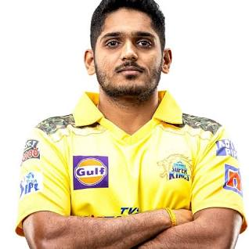

Tushar Deshpande(born 15 May 1995) is an Indian Cricketer.[1]>
He made his first-class debut for Mumbai in the 2016–17 Ranji
Trophy on 6 October 2016.[2] He made his List A debut for Mumbai in
the 2018–19 Vijay Hazare Trophy on 19 September 2018.[3] He took his
first five-wicket haul in List A cricket in the quarter-finals of the
tournament on 14 October 2018.[4] The following month, he was named as
one of eight players to watch ahead of the 2018–19 Ranji Trophy.[5]
Tushar Deshpande(born 15 May 1995) is an Indian Cricketer.[1]>
He made his first-class debut for Mumbai in the 2016–17 Ranji
Trophy on 6 October 2016.[2]He made his List A debut for Mumbai in
the 2018–19 Vijay Hazare Trophy on 19 September 2018.[3] He took his
first five-wicket haul in List A cricket in the quarter-finals of the
tournament on 14 October 2018.[4] The following month, he was named as
one of eight players to watch ahead of the 2018–19 Ranji Trophy.[5]
In August 2019, he was named in the India Blue team's squad for the
2019–20 Duleep Trophy.[6][7] In the 2020 (IPL) auction, he was bought by
the Delhi Capitals ahead of the 2020 (Indian Premier League).[8] In
February 2022, he was bought by the Chennai Super Kingsin the auction
for the 2022 (Indian Premier League) tournament.